PALINDROME next
PLAY drifts. SCAN scrubs. WEAVE combines one, two or three independent audio rings. REC prints the next generation.
This is a preview of the redesign, build 2882fe5. It is not released: there is no installer for
it, and it has never run on an FM-1. The released PALINDROME is unchanged.
Play the preview in the browser
In the emulator, Guide walks through the first two rings on the live panel;
Reference says what every control does. Press GLO once for on-device Info; press it again to close. PLAY creates slow movement, not automatic recording.
The
manual for this build is on its branch.
The screens, from the simulator
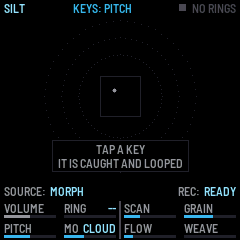
SILT, nothing captured yet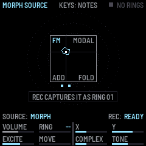
MORPH, the source REC: ring 01 filling
REC: ring 01 filling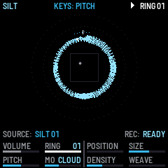
Ring 01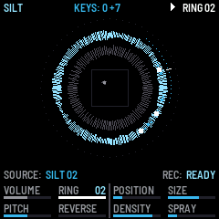
Rings 01 and 02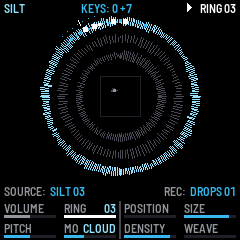
Three rings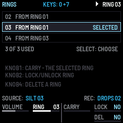
The rings and where they came from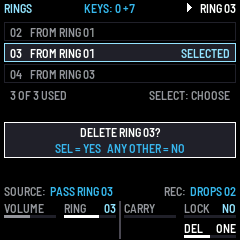
A delete, armed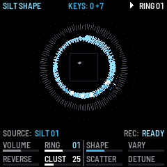
SILT SHAPE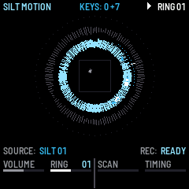
SILT MOTION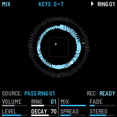
MIX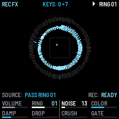
REC FX